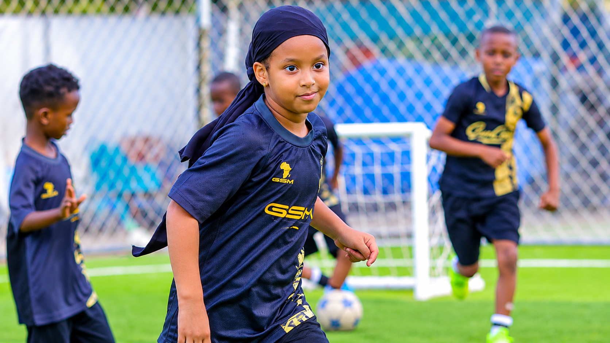

VISION
To become a leading center for youth football development, nurturing talented young players who demonstrate sporting excellence, discipline, leadership and positive character.
Developing young football talent through structured training, discipline, teamwork and a commitment to excellence.

Young Africans Soccer School is dedicated to nurturing young football talent by providing an environment that encourages learning, development and personal growth.
The academy emphasizes technical improvement, discipline, teamwork and the importance of developing responsible young people both on and off the pitch.
Through football education and structured development activities, the Soccer School seeks to inspire young players to pursue their ambitions while building the values necessary for success in sport and everyday life.
Guided by a commitment to youth development, football education and the values that shape future generations.
To become a leading center for youth football development, nurturing talented young players who demonstrate sporting excellence, discipline, leadership and positive character.
To provide a supportive and structured football learning environment that develops technical abilities, encourages teamwork, promotes discipline and helps young people achieve their potential both on and off the field.
Football development is built on values that extend beyond the game.
Encouraging responsibility, commitment and respect for the principles of football and personal development.
Teaching young footballers to communicate, cooperate and work together toward shared goals.
Promoting sportsmanship, integrity and respect for teammates, coaches, opponents and the wider community.
Inspiring young players to continuously improve their abilities, attitudes and performance.
Our approach combines football learning with personal growth, helping young people develop the skills and character needed for the future.
Building a strong foundation in ball control, passing, movement and other essential football skills.
Introducing young players to teamwork, positioning, decision-making and understanding the game.
Encouraging age-appropriate fitness, coordination, movement and healthy sporting habits.
Promoting discipline, confidence, responsibility, education and respect alongside football development.

A positive football environment provides young players with opportunities to practice, learn, build confidence and develop their abilities.


Effective football development depends on structured learning, appropriate training spaces, guidance and a supportive atmosphere. The Soccer School aims to provide young footballers with meaningful opportunities to improve their skills and develop their confidence.
The Young Africans Soccer School is intended to support young people who are passionate about football and eager to learn, develop their skills and grow in a structured sporting environment.
Information about admission requirements, eligible age groups, training schedules and registration opportunities should be obtained through the academy's official communication channels.
ACADEMY ENQUIRIES ↗Supporting young footballers as they learn, develop and pursue their dreams through the game.
CONTACT THE SOCCER SCHOOL ↗